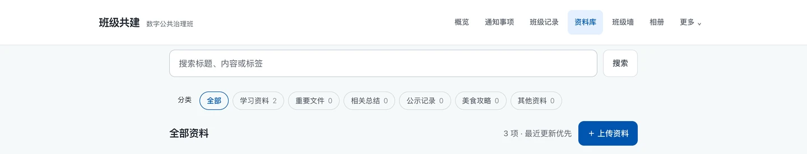

Class Collaboration Platform
A place to find class files and announcements after they scroll out of the group chat. Screens from v0.4.0, November 24, 2026.


How the class uses it
Members can upload and find resources, post to the message board, share photos, or submit feedback. Administrators post announcements, review photos, and manage file versions. Anyone who leaves feedback gets a reference number to check for replies.
What changed in v0.4.0
- The library distinguishes an empty collection from an empty search or filter result and offers a way back to all resources.
- Collapsing an admin form keeps the draft. Uploads flag oversized files before submission and show when a save is taking longer than usual.
- Drafts no longer display preview links. Weekly notes link forward only once the next note is published.
Access
Member and admin access are checked separately. Attachment access depends on the resource's status and the viewer's permissions. These screenshots are from the showcase build.